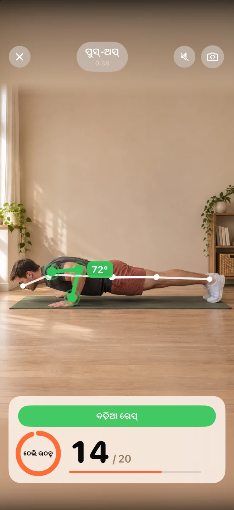
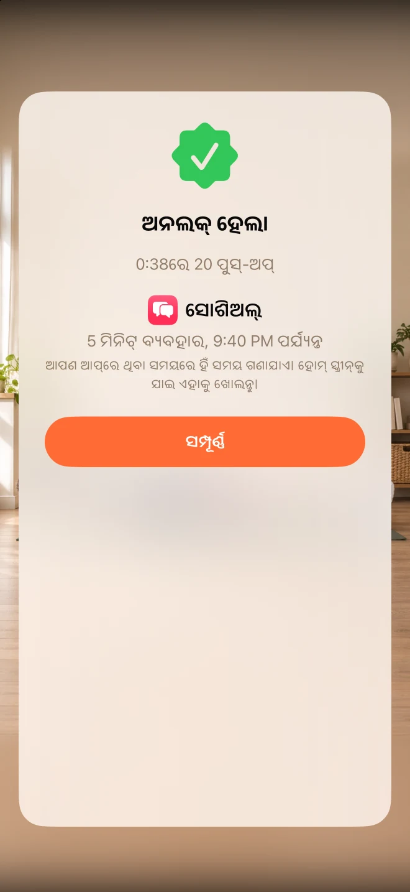

ଆପଣଙ୍କ ବିକ୍ଷେପ ଚୟନ କରନ୍ତୁ।
ଯେଉଁ ଆପ୍ସ ଠାରୁ ଆପଣ କିଛି ଦୂରତା ରଖିବାକୁ ଚାହୁଁଛନ୍ତି, ସେଗୁଡିକୁ ଚୟନ କରନ୍ତୁ। ଅନଲକି ଆପଲ୍ ସ୍କ୍ରିନ୍ ଟାଇମ୍ ବ୍ୟବହାର କରି ସେଗୁଡିକୁ ଲକ୍ କରି ରଖିଥାଏ।
ଫିଡ୍ ଆଗରୁ କିଛି ସମୟ ଚଳାଚଳି କରନ୍ତୁ।
କମ୍ ଅଟୋପାଇଲଟ୍। ଅଧିକ ଆପଣ।
ଆପଣଙ୍କ ଦିନର ସମୟ ନେଉଥିବା ଆପ୍ଗୁଡ଼ିକୁ ଲକ୍ କରନ୍ତୁ। ପୁଶ୍-ଅପ୍, ସ୍କ୍ୱାଟ୍ କିମ୍ବା ଜମ୍ପିଂ ଜ୍ୟାକ୍ର ଏକ ଛୋଟ ସେଟ୍ କରି କିଛି ମିନିଟ୍ ବ୍ୟବହାର ସମୟ ପାଆନ୍ତୁ।
ମୁକ୍ତ · କୌଣସି ସବସ୍କ୍ରିପ୍ସନ୍ ନାହିଁ · କୌଣସି ଆକାଉଣ୍ଟ୍ ନାହିଁ।


ଆପ୍ ସ୍କ୍ରିନଶଟ
ବୈଶିଷ୍ଟ୍ୟ
ଯେଉଁ ଆପ୍ସ ଠାରୁ ଆପଣ କିଛି ଦୂରତା ରଖିବାକୁ ଚାହୁଁଛନ୍ତି, ସେଗୁଡିକୁ ଚୟନ କରନ୍ତୁ। ଅନଲକି ଆପଲ୍ ସ୍କ୍ରିନ୍ ଟାଇମ୍ ବ୍ୟବହାର କରି ସେଗୁଡିକୁ ଲକ୍ କରି ରଖିଥାଏ।
ପୁଶ-ଅପ୍ସ, ସ୍କ୍ଵାଟ୍ସ କିମ୍ବା ଜମ୍ପିଂ ଜ୍ୟାକ୍ସ କରନ୍ତୁ। ଆପଣ ଯେତେସେତେ ଏଗୁଡ଼ିକୁ କରନ୍ତି, ସେହି ସଂଖ୍ୟାକୁ ଆପଣଙ୍କ ଆଇଫୋନ୍ କ୍ୟାମେରା ଲକ୍ଷ୍ୟ କରିଥାଏ ଏବଂ ଏକାଙ୍ଗରେ ପ୍ରତିକ୍ରିୟା ଦେଇଥାଏ।
ଆପଣଙ୍କ ପୁରସ୍କାର ଏବଂ ଦୈନିକ ସୀମା ସ୍ଥିର କରନ୍ତୁ। ଆପଣ ଆପ୍ସ ବ୍ୟବହାର କଲାବେଳେ ଅର୍ଜନ କରା ମିନିଟ୍ସ ଗଣିବ, ପରେ ଲକ୍ ପୁନର୍ବାର ଆସିବ।
ଆପ୍କୁ ଦେଖନ୍ତୁ
ପ୍ରକୃତ ସ୍କ୍ରିନ୍। ଭିତରେ କ’ଣ ଅଛି, ତାହା ଜାଣିବା ପାଇଁ ଏହା ଅଧିକ ଉପଯୁକ୍ତ।

FAQ
ଆରମ୍ଭ କରିବା ପୂର୍ବରୁ ଉତ୍ତର
ଅନଲକି ଆପଲ୍ର ସ୍କ୍ରିନ୍ ଟାଇମ୍ ବ୍ୟବହାର କରେ। ସେଟଅପ ସମୟରେ ଆପଣ ଆପ୍ସଗୁଡିକ ବାଛି ନିଅନ୍ତୁ ଏବଂ ଅନୁମତି ଦିଅନ୍ତୁ। ଆଇଫୋନ୍ ସେଟିଂରେ ଆପଣ ଅନୁମତିକୁ ବାତିଲ କରିପାରିବେ।
Unlocky ଆପଣଙ୍କୁ ରେକର୍ଡ କରେ ନାହିଁ। କ୍ୟାମେରା ଫ୍ରେମଗୁଡ଼ିକୁ ଆପଣଙ୍କ iPhoneରେ ତତ୍କ୍ଷଣାତ୍ ବିଶ୍ଳେଷଣ କରାଯାଏ। ଭିଡିଓ ଓ ଫଟୋ ସଞ୍ଚୟ କିମ୍ବା ଅପଲୋଡ୍ କରାଯାଏ ନାହିଁ।
ହଁ। ପୁଶ-ଅପ୍ସ, ସ୍କ୍ଵାଟ୍ସ କିମ୍ବା ଜମ୍ପିଂ ଜ୍ୟାକ୍ସ ବାଛି ନିଅନ୍ତୁ ଏବଂ କେତେ ମିନିଟ୍ ପରେ ପୁରସ୍କାର ମିଳିବ, ସେହି ସମୟ ସେଟ୍ କରନ୍ତୁ। ଏକ ଦୈନିକ ସୀମା ତୁମକୁ ଏକ ନିର୍ଦ୍ଦିଷ୍ଟ ସୀମାରେ ରହିବାକୁ ସାହାୟ୍ୟ କରିବ।
ହଁ। ଅନଲକିରେ କୌଣସି ସବସ୍କ୍ରିପ୍ସନ୍ କିମ୍ବା ପେୱାଲ୍ ନାହିଁ। ଏଥିରେ iOS 17 କିମ୍ବା ତାହାଠାରୁ ଅଧିକ ଅଛି ଏବଂ ଆଇଫୋନ୍ ଆବଶ୍ୟକ।
ମୁକ୍ତ · କୌଣସି ସବସ୍କ୍ରିପ୍ସନ୍ ନାହିଁ · କୌଣସି ଆକାଉଣ୍ଟ୍ ନାହିଁ।
ଆପଣଙ୍କର ଇଚ୍ଛା ଅନୁଯାୟୀ ଗତିରେ ଚାଲିବା ଏବଂ ଯଦି କିଛି ଅସୁବିଧା ହୁଏ, ତାହାକୁ ବନ୍ଦ କରିଦିଅନ୍ତୁ। ଯଦି ଆପଣଙ୍କୁ କୌଣସି ସ୍ୱାସ୍ଥ୍ୟ ସମସ୍ୟା ଅଛି, ତେବେ ନୂଆ ବ୍ୟାୟାମ ଆରମ୍ଭ କରିବା ପୂର୍ବରୁ ଏକ ଡାକ୍ତରଙ୍କୁ ପରାମର୍ଶ କରନ୍ତୁ।